4130B20 power steering pump r r
- Path
- Procedures > 41 STEERING > 4130 POWER ASSISTED STEERING > 4130B power steering hydraulic sytem > 4130B20 power steering pump r r
- Kind
- repair procedure (removal / refitting; the operation number is the code)
- Applies to
- engines: 2.0 JTS, 2.5 V6, 3.2 V6, 1.9 JTD 8v , 1.9 JTD 16v, 2.0 JTS, 2.4 JTD 10v, 2.4 JTD 20v; all production periods
- Interactive page
- https://sloeber94.github.io/elrnDB-a156/en/#/3238134
Applies to: engines: 2.0 JTS, 2.0 JTS; all production periods
 Removing
Removing
 Refitting
RefittingPosition the vehicle on the ramp
Applies to: all engines; all production periods
Proceed with removal 1016A40 ignition coil cover on cylinder head- r+r .
Proceed with removal 1008C10 power unit upper reaction link r r .
Proceed with removal 4130B10 power steering fluid resevoir r r .
Applies to: engines: 2.0 JTS, 2.0 JTS; all production periods
Proceed with removal 1016A40 ignition coil cover on cylinder head- r+r .
Proceed with removal 4130B10 power steering fluid resevoir r r .
Applies to: engines: 2.0 JTS, 2.0 JTS; all production periods
1. Disconnect the the delivery hose to the power assisted steering box from the power steering pump.
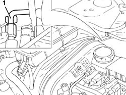
Applies to: engines: 2.0 JTS, 2.0 JTS; all production periods
1. Release the timing sensor wiring from the collar on the protection.
2. Undo the bolts (2a) and remove the protection (2b).
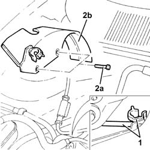
Applies to: engines: 2.0 JTS, 2.0 JTS; all production periods
Proceed with removal 7055B54 under-engine guard - r r .
Proceed with the removal 4450B10 Front WHEEL (one) - R.R. (Right side).
Proceed with the removal 7055B64 Engine compartment DUST shield in front wheel arch (one), left or right - R.R. (Right side).
Proceed with removal 1092G10 single engine belt r r .
1. Keep the pump shaft secured and undo the bolts (1a) and remove the power steering pump pulley (1b).
2. Undo the bolts (2a) and remove the power steering pump (2b).
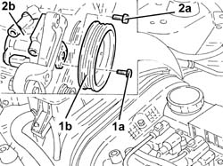
Applies to: engines: 2.0 JTS, 2.0 JTS; all production periods
Refitting
RemovingPlace the power assisted steering pump back in its housing and fix it tightening the bolts to the recommended torque.
 | Fastening | Component | Ø | Value (daNm) |
|---|---|---|---|---|
- | Bolt | POWER STEERING PUMP | M8 | (Support side) 1.9 ÷ 2.3 |
Place the power assisted steering pump pulley back in its housing and tighten the bolts while keeping the pump shaft secured.
| Fastening | Component | Ø | Value (daNm) |
|---|---|---|---|---|
- | Bolt | POWER STEERING PUMP DRIVE PULLEY | M6 | (Power assisted steering pupm side) 0.6 ÷ 0.8 |
Proceed with refitting 1092G10 single engine belt r r .
Proceed with the refitting 7055B64 Engine compartment DUST shield in front wheel arch (one), left or right - R.R. (Right side).
Proceed with the refitting 4450B10 Front WHEEL (one) - R.R. (Right side).
Proceed with refitting 7055B54 under-engine guard - r r .
Place the protection back in its housing and secure it using the bolts.
Secure the timing sensor wiring using the collar on the protection.
Connect the supply pipe to the power assisted steering box to the power assisted steering pump and tighten the connector to the recommended torque.
| Fastening | Component | Ø | Value (daNm) |
|---|---|---|---|---|
- | Connector | PIPE BTWN PUMP + POWER STEERING BOX | M16 | (Power steering pump side) 3.8 ÷ 4.2 |
Applies to: engines: 2.0 JTS, 2.0 JTS; all production periods
Proceed with refitting 4130B10 power steering fluid resevoir r r .
Proceed with refitting 1016A40 ignition coil cover on cylinder head- r+r .
Applies to: all engines; all production periods
Proceed with refitting 4130B10 power steering fluid resevoir r r .
Proceed with refitting 1008C10 power unit upper reaction link r r .
Proceed with refitting 1016A40 ignition coil cover on cylinder head- r+r .
Applies to: engines: 2.0 JTS, 2.0 JTS; all production periods
Fill the power steering circuit with the recommended fluid.
 | Type | Component | Name | Qty. |
|---|---|---|---|---|
- | Fluid | POWER ASSISTED STEERING CIRCUIT | TUTELA GI/A | - |
Bleed the power steering system as described below
With the front wheels raised off the ground, with the engine switched off turn the steering wheel to full lock, left and right, 4-5 times.
Check and, if necessary, top up the fluid level in the reservoir.
Remove the car from the ramps.
Start the engine and carry out 4 - 5 full steering wheel turn cycles (right and left).
Top up the fluid level in the reservoir.
Applies to: engines: 2.5 V6, 3.2 V6; all production periods
Removing
Refitting1092G10 single engine belt r r
Disconnect the negative battery lead.
Use a syringe to empty the power steering reservoir then discharge into a container.
1. Undo bolts (1a) securing the left cylinder head cover and move the oil dipstick (1b) and air conditioner system pipes (1c) to one side.
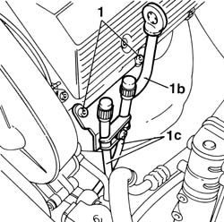
Applies to: engines: 2.5 V6, 3.2 V6; all production periods
1. Undo retaining bolts (1a) and remove left cylinder head exhaust manifold heat shield (1b).
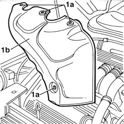
Applies to: engines: 2.5 V6, 3.2 V6; all production periods
1. Remove the two power steering pump inlet/outlet connectors (1a); one is unscrewed from the top of the vehicle and the other from the bottom; undo the bolts (1b) securing the power steering pump to the crankcase.
2. Disconnect the compressor electrical connector and remove it from the mounting bracket.
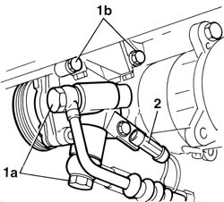
Applies to: engines: 2.5 V6, 3.2 V6; all production periods
Refitting
RemovingFit the power assisted steering pump and secure it to the crankcase mounting.
Connect the compressor electrical connector and secure it to the mounting bracket.
Connect the pipe from pump to power steering box, pump side, and tighten the connector to the specified torque.
| Fastening | Component | Ø | Value (daNm) |
|---|---|---|---|---|
- | Connector | PIPE BTWN PUMP + POWER STEERING BOX | M16 | (Power assisted steering pump side) 3.6 ÷ 4.4 |
Connect the feed pipe from reservoir to power steering pump, pump side, and tighten its connector to the specified torque.
| Fastening | Component | Ø | Value (daNm) |
|---|---|---|---|---|
- | Connector | POWER STEERING PUMP SUPPLY PIPE | M18 | (Power assisted steering pump side) 3.6 ÷ 4.4 |
Fit the cylinder head exhaust manifold heat shield.
Fit the oil dipstick mounting and the air conditioning system pipe to the left cylinder head.
1092G10 single engine belt r r
Reconnect the negative battery terminal.
Top up the power assisted circuit with the recommended fluid.
| Type | Component | Name | Qty. |
|---|---|---|---|---|
- | Fluid | POWER ASSISTED STEERING CIRCUIT | TUTELA GI/A | - |
Bleed the power steering system as described below
With the front wheels raised off the ground, with the engine switched off turn the steering wheel to full lock, left and right, 4-5 times.
Check and, if necessary, top up the fluid level in the reservoir.
Remove the car from the ramps.
Start the engine and turn the steering wheel to full lock, left and right, 4 - 5 times.
Top up the fluid level in the reservoir.
Applies to: engines: 1.9 JTD 8v , 2.4 JTD 10v; all production periods
Removing
RefittingPosition the vehicle on the ramp
1092G10 single engine belt r r
4450B10 Front WHEEL (one) - R.R.
7055B64 Engine compartment DUST shield in front wheel arch (one), left or right - R.R.
1008C10 power unit upper reaction link r r
Drain the power steering fluid from the reservoir using a suitable syringe.
1. Undo the bolts (1a) securing the front exhaust pipe (1b) to the turbocharger.
Undo the bolt securing the exhaust pipe rigid support to the collar.
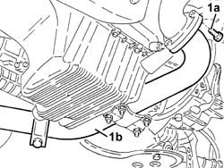
Applies to: engines: 1.9 JTD 8v , 2.4 JTD 10v; all production periods
1. Undo lower bolt (1a) of engine oil dipstick (1b).
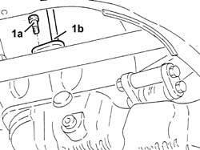
Applies to: engines: 1.9 JTD 8v , 2.4 JTD 10v; all production periods
1. Undo upper bolt (1a) and remove engine oil dipstick (1b).
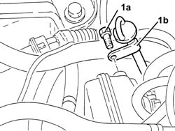
Applies to: engines: 1.9 JTD 8v , 2.4 JTD 10v; all production periods
1. Undo the nuts (1a) and move the E.G.R valve (1b) from the relevant support.
 | Name | Connector |
|---|---|---|
1b | EGR solenoid |
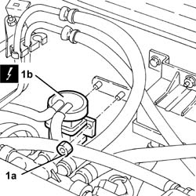
Applies to: engines: 1.9 JTD 8v , 2.4 JTD 10v; all production periods
1. Undo the bolts (1a) and the nut (1b) and remove the alternator rear mounting bracket (1c).
2. Undo the bolts (2a) and remove the power assisted steering pump drive pulley (2b).
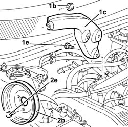
Applies to: engines: 1.9 JTD 8v , 2.4 JTD 10v; all production periods
1. Disconnect the power steering pump oil inlet pipe.
2. Disconnect the oil outlet pipe connector from the power steering pump.
3. Undo bolts (3a) and remove power steering pump (3b)
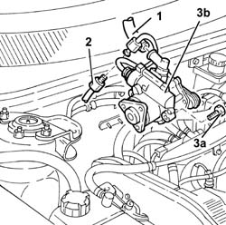
Applies to: engines: 1.9 JTD 8v , 2.4 JTD 10v; all production periods
Refitting
RemovingFit the power steering pump and secure by tightening the bolts to the recommended torque.
| Fastening | Component | Ø | Value (daNm) |
|---|---|---|---|---|
- | Bolt | POWER STEERING PUMP | M8 | 1.9 - 2.3 |
Connect the oil inlet pipe to the power steering pump.
Connect the power steering pump oil outlet pipe and tighten to the recommended torque.
| Fastening | Component | Ø | Value (daNm) |
|---|---|---|---|---|
- | Connector | PIPE BTWN PUMP + POWER STEERING BOX | M16 | 3.8 - 4.2 |
Fit the power assisted steering pump drive pulley and fix it tightening the bolts to the recommended torque.
| Fastening | Component | Ø | Value (daNm) |
|---|---|---|---|---|
- | Bolt | POWER STEERING PUMP DRIVE PULLEY | M6 | 0.6 - 0.8 |
Fit the alternator rear bracket and secure it with the bolt and nut.
Place the E.G.R. valve back in its housing and secure it to the mount using the nuts.
| Name | Connector |
|---|---|---|
- | EGR solenoid |
Fit the engine oil dipstick and secure it using the upper bolts..
Tighten the lower bolt for the engine oil dipstick.
Tighten the bolt securing the exhaust pipe rigid support to the collar.
Tighten the bolts securing the front section of the exhaust pipe to the turbocharger to the specified torque.
| Fastening | Component | Ø | Value (daNm) |
|---|---|---|---|---|
- | Bolt | FLEXIBLE PIPE SECTION TO ENGINE | M8 | 2.0 - 2.5 |
1008C10 power unit upper reaction link r r
7055B64 Engine compartment DUST shield in front wheel arch (one), left or right - R.R.
4450B10 Front WHEEL (one) - R.R.
1092G10 single engine belt r r
Fill the power steering circuit with the recommended fluid.
| Type | Component | Name | Qty. |
|---|---|---|---|---|
- | Fluid | POWER ASSISTED STEERING CIRCUIT | TUTELA GI/A | - |
The power steering system is self-bleeding; to bleed, turn the steering wheel full lock left and right with the engine running and the car stopped.
With the front wheels raised off the ground, with the engine switched off turn the steering wheel to full lock, left and right, 4-5 times.
Check and, if necessary, top up the fluid level in the reservoir.
Position the vehicle on the ground and start up the engine.
Carry out 4 - 5 complete steering wheel rotation cycles (right and left).
Top up the fluid level in the reservoir.
Applies to: engines: 1.9 JTD 16v; all production periods
Removing
RefittingPosition the vehicle on the ramp
Ensure that the ignition key is in the OFF position, then disconnect the negative battery terminal (-).
| Name | Connector |
|---|---|---|
- | Battery |
Proceed with removal 1016A10 sound-proofing cover - r + r .
Proceed with removal 4450B04 right front wheel r r .
Proceed with removal 7055B54 under-engine guard - r r .
Proceed with removal - 7055B91 Right front WHEEL ARCH LINER - R.R. .
Loosen the bolts fixing the power assisted steering pump pulley.
1. Adjust the moving tensioner to loosen the engine components single drive belt tension.
2. Remove the engine components single drive belt.
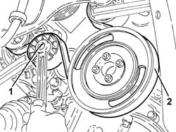
Applies to: engines: 1.9 JTD 16v; all production periods
1. Completely undo the bolts (1a) loosened previously and remove the power assisted steering pump pulley (1b).
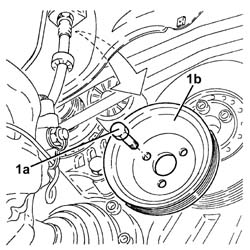
Applies to: engines: 1.9 JTD 16v; all production periods
Disconnect the rapid connectors for the inlet and outlet pipes from the heat exchanger and drain the power assisted steering fluid.
1. Undo the lower bolt for the engine oil dipstick pipe.
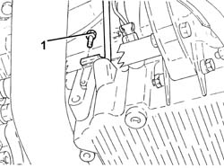
Applies to: engines: 1.9 JTD 16v; all production periods
1. Undo the bolts (1a) and remove the power unit reaction rod (1b).
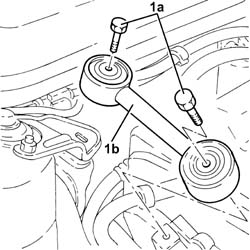
Applies to: engines: 1.9 JTD 16v; all production periods
1. Disconnect the electrical connection shown from the diesel electronic injection system control unit.
| Name | Connector |
|---|---|---|
1 | Engine management ECU |
2. Disconnect the front engine coupling.
| Name | Connector |
|---|---|---|
2 | Front/engine connection |
Release the electrical wiring from the securing bands and move it.
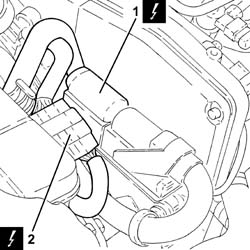
Applies to: engines: 1.9 JTD 16v; all production periods
1. Undo the upper bolt fixing the engine oil dipstick tube to the pressure pump mounting.
2. Remove the tube for the engine oil dipstick releasing it from the fastenings on the electrical wiring.
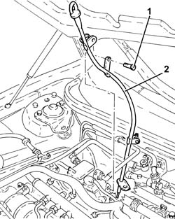
Applies to: engines: 1.9 JTD 16v; all production periods
1. Loosen the band and disconnect the supply pipe from the fluid reservoir to the power assisted steering pump, power assisted steering pump side.
2. Undo the connector (2a) and disconnect the supply pipe from the pump to the power assisted steering box (2b), power assisted steering box side.
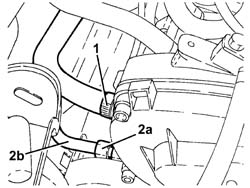
Applies to: engines: 1.9 JTD 16v; all production periods
1. Undo the bolts (1a) and remove the power assisted steering pulley protection (1b).
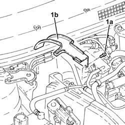
Applies to: engines: 1.9 JTD 16v; all production periods
1. Undo the upper alternator fixing bolt.
2. Undo the bolts (2a) and remove the rear alternator bracket (2b).
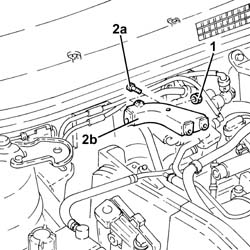
Applies to: engines: 1.9 JTD 16v; all production periods
1. Undo the bolts (1a) and remove the power assisted steering pump (1b).
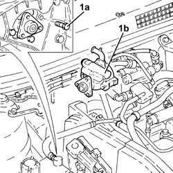
Applies to: engines: 1.9 JTD 16v; all production periods
Refitting
Removing1. Refit the power steering pump (1a) in its seating and tighten its bolts (1b) to the specified torque.
| Fastening | Component | Ø | Value (daNm) |
|---|---|---|---|---|
1b | Bolt | POWER STEERING PUMP | M8 | (Support side) 2.3 ÷ 2.8 |
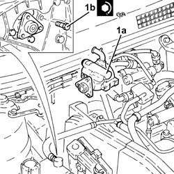
Applies to: engines: 1.9 JTD 16v; all production periods
Place the alternator rear mounting bracket back in its housing and secure it to the intermediate shaft support using the bolts.
Tighten the upper alternator bolts to the specified torque.
| Fastening | Component | Ø | Value (daNm) |
|---|---|---|---|---|
- | Bolt | ALTERNATOR ASSEMBLY | M10 | 4.5 ÷ 5.5 |
| Fastening | Component | Ø | Value (daNm) |
|---|---|---|---|---|
- | Bolt | ALTERNATOR ASSEMBLY | M12 | 6.3 ÷ 7.7 |
Place the power assisted steering pump pulley protection back in its housing and secure it using the bolts.
1. Connect the delivery pipe from pump to power steering box (1a), steering pump side, and tighten the connector (1b) to the specified torque.
| Fastening | Component | Ø | Value (daNm) |
|---|---|---|---|---|
1b | Connector | PIPE BTWN PUMP + POWER STEERING BOX | M16 | (Power assisted steering pump side) 4.5 ÷ 5.5 |
2. Connect the supply pipe from the fluid reservoir to the power assisted steering pump, pump side and tighten the band.
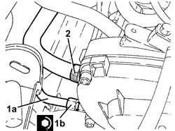
Applies to: engines: 1.9 JTD 16v; all production periods
Place the tube for the engine oil dipstick back in its housing, and secure it to the electrical wiring using the bands.
Tighten the upper bolt fixing the engine oil dipstick pipe to the pressure pump mounting.
Place the electrical wiring back in its seating and fix it to the bands.
Connect the front engine coupling.
Connect the electrical connection to the diesel electronic injection control unit.
1. Place the power unit reaction rod (1a) back in its housing and fix it tightening the bolts (1b) to the recommended torque.
| Fastening | Component | Ø | Value (daNm) |
|---|---|---|---|---|
1b | Bolt | REACTION ROD | M10 | 4.5 ÷ 5.5 |
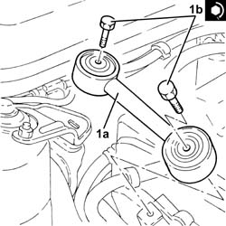
Applies to: engines: 1.9 JTD 16v; all production periods
Tighten the lower bolt fixing the engine oil dipstick pipe.
Connect the rapid connectors for the inlet and outlet pipes to the heat exchanger pipe.
Place the power assisted steering pump back in its housing and fix it without tightening the bolts.
Adjust the moving tensioner and place the engine components single drive belt back in its housing.
Tighten the power steering pump pulley bolts to the specified torque.
| Fastening | Component | Ø | Value (daNm) |
|---|---|---|---|---|
- | Bolt | POWER STEERING PUMP DRIVE PULLEY | M8 | (Power assisted steering pump side 23 28 |
Proceed with refitting - 7055B91 Right front WHEEL ARCH LINER - R.R. .
Proceed with refitting 7055B54 under-engine guard - r r .
Proceed with refitting 4450B04 right front wheel r r .
Connect the negative (-) battery terminal
Fill the power steering circuit with the recommended fluid.
| Type | Component | Name | Qty. |
|---|---|---|---|---|
- | Fluid | HYDRAULIC POWER ASSISTED STEERING SYSTEM | TUTELA GI/A | 1.3 |
Bleed the power steering system as described below
With the front wheels raised off the ground, with the engine switched off turn the steering wheel to full lock, left and right, 4-5 times.
Check and, if necessary, top up the fluid level in the reservoir.
Remove the car from the ramps.
Start the engine and carry out 4 - 5 full steering wheel turn cycles (right and left).
Top up the fluid level in the reservoir.
Proceed with refitting 1016A10 sound-proofing cover - r + r .
Applies to: engines: 2.4 JTD 20v; all production periods
Removing
RefittingPosition the vehicle on the ramp
Proceed with removal 1016A10 sound-proofing cover - r + r .
Proceed with removal 7055B54 under-engine guard - r r .
1. Disconnect the rapid connectors on the power steering fluid inlet and outlet pipes, heat exchanger pipe side.
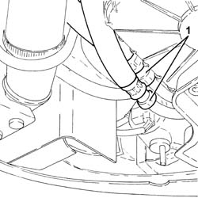
Applies to: engines: 2.4 JTD 20v; all production periods
Proceed with removal 1008C10 power unit upper reaction link r r .
Position a hydraulic jack under the gearbox
1. Undo the bolt fixing the power unit gearbox side rigid support to the flexible mounting.
Lower the hydraulic jack until the drive shaft joint is resting on the front suspension crossmember.
Remove the hydraulic jack from under the gearbox
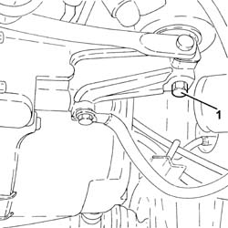
Applies to: engines: 2.4 JTD 20v; all production periods
1. Loosen the bolts fixing the power assisted steering pump pulley.
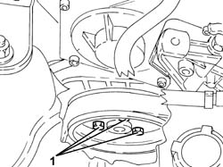
Applies to: engines: 2.4 JTD 20v; all production periods
Proceed with removal 4450B04 right front wheel r r .
Proceed with removal - 7055B91 Right front WHEEL ARCH LINER - R.R. .
Proceed with removal - 7055B66 Engine compartment DUST SHIELD protection in right front wheel arch - R.R. .
Proceed with removal 1092G10 single engine belt r r .
1. Disconnect the rapid attachment for the fuel return pipe to the tank, fuel return manifold pipe side.
2. Disconnect the rapid attachment for the fuel return pipe from the fuel filter, return manifold pipe side.
3. Disconnect the rapid attachment of the supply pipe from the fuel filter to the pressure pump, pressure pump side.
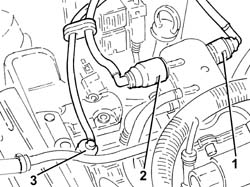
Applies to: engines: 2.4 JTD 20v; all production periods
Proceed with removal 1084A16 oil dip stick pipe - r r .
Proceed with removal 1060F50 fuel return manifold - r r .
Proceed with removal 1060G70 vacum tank for controlling engine air intake r r .
Proceed with removal 1080D34 engine oil vapour separator - r + r .
1. Undo the nut for the upper alternator fixing bolt.
2. Undo the bolts (2a) and remove the alternator mounting bracket (2b).
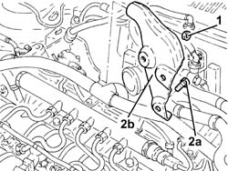
Applies to: engines: 2.4 JTD 20v; all production periods
1. Undo the connector (1a) and disconnect the delivery pipe from pump to power steering box (1b), pump side.
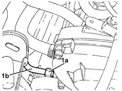
Applies to: engines: 2.4 JTD 20v; all production periods
1. Undo the bolts (1a) and remove the upper protective timing cover (1b), inlet side.
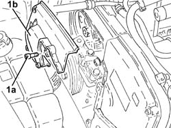
Applies to: engines: 2.4 JTD 20v; all production periods
1. Completely undo the bolts (1a) and remove the power steering pump pulley (1b).
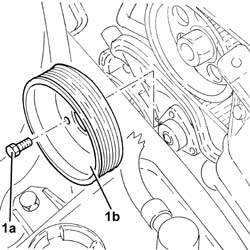
Applies to: engines: 2.4 JTD 20v; all production periods
1. Undo the fixing bolts and move the power assisted steering pump as far back as necessary.
2. Loosen the band and disconnect the supply pipe from the fluid reservoir to the power assisted steering pump, power assisted steering pump side.
3. Remove the power steering pump.
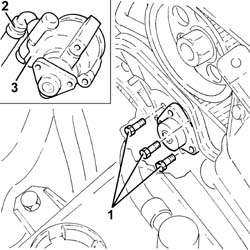
Applies to: engines: 2.4 JTD 20v; all production periods
Refitting
Removing1. Connect the pipe from the fluid reservoir to the power assisted steering pump, pump side and tighten the band.
2. Place the power assisted steering pump (2a) back in its housing and secure it by tightening the bolts (2b) to the recommended torque.
| Fastening | Component | Ø | Value (daNm) |
|---|---|---|---|---|
2b | Bolt | POWER STEERING PUMP | M8 | (Support side) 2.3 ÷ 2.8 |
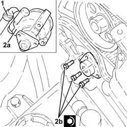
Applies to: engines: 2.4 JTD 20v; all production periods
Place the power assisted steering pump back in its housing and fix it without tightening the bolts.
Fit the upper protective timing gear cover, inlet side, and fix it using the bolts.
1. Connect the supply pipe from pump to power steering box (1a), power steering pump side, and tighten the connector (1b) to the specified torque.
| Fastening | Component | Ø | Value (daNm) |
|---|---|---|---|---|
1b | Connector | PIPE BTWN PUMP + POWER STEERING BOX | M16 | (Power assisted steering pump side) 3.6 ÷ 4.4 |
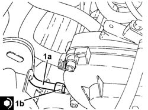
Applies to: engines: 2.4 JTD 20v; all production periods
Place the alternator mounting bracket back in its housing, then secure it using the bolts and the nut for the upper alternator fixing bolt.
Proceed with refitting 1080D34 engine oil vapour separator - r + r .
Proceed with refitting 1060G70 vacum tank for controlling engine air intake r r .
Proceed with refitting 1060F50 fuel return manifold - r r .
Proceed with refitting 1084A16 oil dip stick pipe - r r .
Connect the rapid attachment of the supply pipe from fuel filter to pressure pump, pressure pump side.
Connect the rapid attachment for the fuel return pipe from the fuel filter, return manifold pipe side.
Connect the rapid attachment for the fuel return pipe to the tank, fuel return manifold pipe side.
Proceed with refitting 1092G10 single engine belt r r .
Proceed with refitting - 7055B66 Engine compartment DUST SHIELD protection in right front wheel arch - R.R. .
Proceed with refitting - 7055B91 Right front WHEEL ARCH LINER - R.R. .
Proceed with refitting 4450B04 right front wheel r r .
Tighten the bolts fixing the power assisted steering pump pulley to the recommended torque.
| Fastening | Component | Ø | Value (daNm) |
|---|---|---|---|---|
- | Bolt | POWER STEERING PUMP DRIVE PULLEY | M8 | (Power assisted steering pump side 23 28 |
Position a hydraulic jack under the gearbox.
Using the hydraulic jack, place the gearbox side rigid power unit support in contact with the flexible mounting.
1. Undo the bolt fixing the gearbox side rigid power unit support to the flexible block to the specified torque.
| Fastening | Component | Ø | Value (daNm) |
|---|---|---|---|---|
1 | - | - | - | - |
Remove the hydraulic jack from under the gearbox
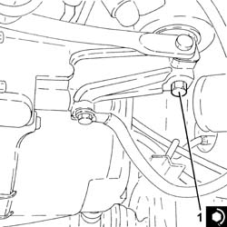
Applies to: engines: 2.4 JTD 20v; all production periods
Proceed with refitting 1008C10 power unit upper reaction link r r .
Connect the rapid connectors of the power steering fluid inlet and outlet pipes, heat exchanger pipe side.
Proceed with refitting 7055B54 under-engine guard - r r .
Fill the power steering circuit with the recommended fluid.
| Type | Component | Name | Qty. |
|---|---|---|---|---|
- | Fluid | HYDRAULIC POWER ASSISTED STEERING SYSTEM | TUTELA GI/A | 1.3 |
Bleed the power steering system as described below
With the front wheels raised off the ground, with the engine switched off turn the steering wheel to full lock, left and right, 4-5 times.
Check and, if necessary, top up the fluid level in the reservoir.
Remove the car from the ramps.
Start the engine and carry out 4 - 5 full steering wheel turn cycles (right and left).
Top up the fluid level in the reservoir.
Proceed with refitting 1016A10 sound-proofing cover - r + r .
Topics linked from this page (17)
- 1008C10 power unit upper reaction link r r
- 1016A10 sound-proofing cover - r + r
- 1016A40 ignition coil cover on cylinder head- r+r
- 1060F50 fuel return manifold - r r
- 1060G70 vacum tank for controlling engine air intake r r
- 1080D34 engine oil vapour separator - r + r
- 1084A16 oil dip stick pipe - r r
- 1092G10 single engine belt r r
- 4130B10 power steering fluid resevoir r r
- 4450B04 right front wheel r r
- 4450B10 Front WHEEL (one) - R.R.
- 7055B54 under-engine guard - r r
- 7055B64 Engine compartment DUST shield in front wheel arch (one), left or right - R.R.
- A1 Battery
- D4 Front/engine connection
- L30 EGR solenoid
- M10B Engine management ECU ( ENGINE )
Topics that link to this page (6)
- H11 STEERING HARD / (IN ONE DIRECTION ONLY)
- S10 ENGINE WHILSTLING / SERVICES BELT NOISY'
- S35 NOISE ' POWER ASSISTED STEERING / END OF TRAVEL
- S45 NOISE' FRONT / ROUND BENDS
- 4130B21 power steering pump r r with interfering parts removed
- 4130B34 supply pipe from fluid resevior to power steering pump r r